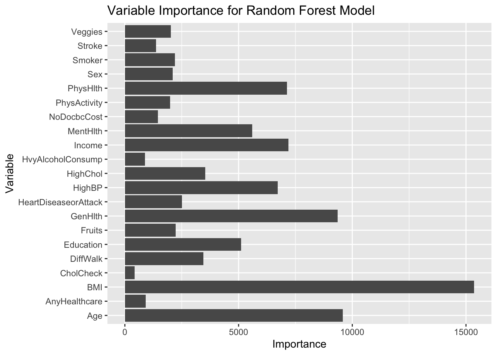

This page is a continuation of the EDA page for the project addressing the creation and selection of a predictive model on the Diabetes Health Indicators Dataset from Kaggle.
The target (or response) variable is Diabetes_binary, where there are two classes: No Diabetes and Prediabetes or Diabetes. We are using all 21 predictor variables: HighBP, HighChol, CholCheck, BMI, Smoker, Stroke, HeartDiseaseorAttack, PhysActivity, Fruits, Veggies, HvyAlcoholConsump, AnyHealthcare, NoDocbcCost, Genhlth, MentHlth, PhysHlth, DiffWalk, Sex, Age, Education, and Income. We are treating everything but BMI as a categorical variable and BMI as a numeric variable.
In this page, we will explore and select a model that predicts the status of diabetes in a patient the best.
We will use tidymodels, the log-loss metric, and 5 fold cross-validation to select the best model from each of the two families of models, then compare the two best models from each family.
Data Split
Initally, we need to split the data into a training (70% of the data) and test set (30% of the data). We’ve set a seed to make things reproducible.
• Centering and scaling for: all_numeric_predictors()
Classification Tree
A classification tree model is a model that usually uses the most prevalent class in a region as the prediction. The response is a categorical variable, in our case: the Diabetes_binary variable. We will split the predictor space up into region and makes the prediction based on which space an observation ends up in. Classification trees are nonlinear and are fairly easy to interpret!
Let’s begin by defining the classification tree model using decision_tree() and specify cost_complexity as a parameter to be tuned, along with rpart as the engine.
A Random Forest Model is an ensemble tree method where multiple trees are created from bootstrap samples. These average results are what are used to make the final prediction, and also help the overall model to not become ‘overfit’. Random Forests are less prone to drastic changes in prediction with small changes in inputs than the classification tree models. Let’s see if we find that to be true for this data!
Let’s begin by defining the random forest model using rand_forest() and specify mtry as a parameter to be tuned, along with ranger as the engine. I also like the look and feel of the importance plot from the previous homework, so I included the importance specification as ‘impurity’.
I’ve also created the workflow, which uses the same recipe as before, but the random forest model this time.
# A tibble: 2 × 5
Model .metric .estimator .estimate .config
<chr> <chr> <chr> <dbl> <chr>
1 Classification Tree mn_log_loss binary 0.353 pre0_mod0_post0
2 Random Forest mn_log_loss binary 0.321 pre0_mod0_post0
Close call! It appears that the Random Forest Model was (slightly) better at predicting on the test set… phew! That aligns with the idea that the classification tree model might have overfit on the data and the random forest model is more accurate due to the averaging.
We can extract that fit from our ‘best overall’ model!
rf_final_fit |>extract_fit_parsnip()
parsnip model object
Ranger result
Call:
ranger::ranger(x = maybe_data_frame(x), y = y, mtry = min_cols(~4L, x), num.trees = ~50, importance = ~"impurity", num.threads = 1, verbose = FALSE, seed = sample.int(10^5, 1), probability = TRUE)
Type: Probability estimation
Number of trees: 50
Sample size: 177576
Number of independent variables: 21
Mtry: 4
Target node size: 10
Variable importance mode: impurity
Splitrule: gini
OOB prediction error (Brier s.): 0.1001395
Now let’s use the script from homework 9 to create the importance plot.
get_rand_for_importance <-function(x) { x |>extract_fit_parsnip() |> vip::vi()}ctrl_imp <-control_grid(extract = get_rand_for_importance)cells_resampling <- rf_final_wkf |>fit_resamples(diabetes_CV_folds, control = ctrl_imp)cells_resampling
ggplot(cells_resampling_2, aes(x=Variable, y=Importance)) +geom_bar(stat ='identity')+labs(title='Variable Importance for Random Forest Model', x='Variable', y='Importance') +coord_flip()

BMI, as I secretly thought, is the MOST important variable for predicting the status of diabetes. This super important variable is followed closely by Age and General Health. Physical Health, Income, and High Blood Pressure are the fourth, fifth, and sixth most importance for this model.
Check out the API next to see how your attributes round up to predict your diabetes status….